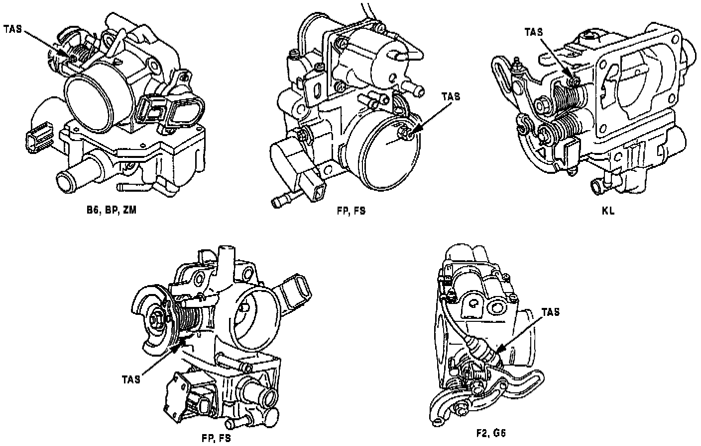

Throttle Adjustment Screw - Adjustment Precaution
Bulletin No.: 014/98Issued: 12/09/98
Revised:
Category
F(O1)
Applicable Model/s
See Below
Subject
TAS (THROTTLE ADJUSTMENT SCREW)
ADJUSTMENT
APPLICABLE MODEL(S)/VINS
All fuel injected models.
DESCRIPTION

Fuel injected vehicles with idle speed control motors should NOT have the TAS (Throttle Adjustment Screw) adjusted for any reason. Refer to illustration. The TAS functions as a stopper when the throttle valve is fully closed. During production, the TAS is accurately set by measuring the airflow rate past a closed throttle plate. Any adjustment to this screw will affect PCM control of idle speed.
Customers complaining of low idle speed should have their vehicle repaired using the Workshop Manual.
Note
^ Tampering with this screw will affect the idle contact switch and/or throttle position sensor settings. This can lead to rough idle and difficulty in diagnosis of idle quality concerns.
^ The TAS locations on the examples below may vary depending on model year of vehicle.